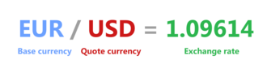
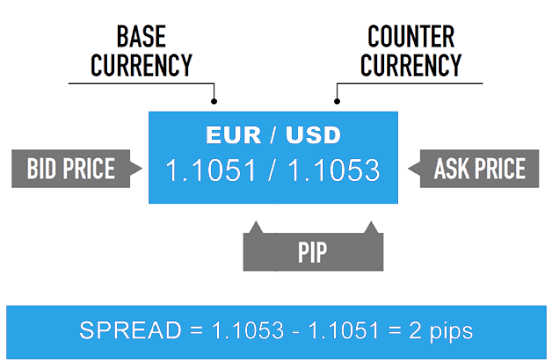

In Forex, currencies are always traded in pairs because you are buying one currency while selling another. A currency pair shows the value of one currency compared to another. For example, EUR/USD = 1.09614 means one Euro is worth 1.09 U.S. Dollars.
Currency pairs are grouped into three main categories:
These are the most traded pairs in the Forex market and always include the U.S. Dollar (USD). Examples:
Also called cross-currency pairs, these do not include the U.S. Dollar. Examples:
They have less trading volume than majors but still offer good opportunities.
3. Exotic PairsThese combine a major currency with the currency of a smaller or emerging economy. Examples:
As a new trader, it’s best to start with major pairs because they are more predictable and easier to analyze. Once you gain experience, you can explore minors and exotics.
2.2 Base and Quote Currency Every currency pair is made up of two parts: the base currency and the quote currency. Understanding this is essential for knowing what you are actually buying or selling.
Base Currency:The first currency listed in the pair.
Quote Currency:The second currency listed in the pair.
Example: EUR/USD = 1.09614 EUR (Euro) = Base currency USD (U.S. Dollar) = Quote currency This means 1 Euro is equal to 1.09 U.S. Dollars.
When you buy EUR/USD, you are buying Euros and selling U.S. Dollars at the same time. When you sell EUR/USD, you are selling Euros and buying U.S. Dollars.
This structure is the same for all pairs. Let’s look at another example: GBP/JPY = 150.50 GBP (British Pound) = Base currency JPY (Japanese Yen) = Quote currency This means 1 British Pound is worth 150.50 Japanese Yen.
The base currency is always considered “one unit”, and the quote currency tells you how much it is worth. This helps traders quickly calculate the value of trades and potential profits.
Tip for beginners:Always focus on the base currency when making decisions. If you buy a pair, you expect the base currency to rise. If you sell a pair, you expect the base currency to fall.
2.3 Understanding Bid, Ask, and Spread In Forex trading, you will often see two prices listed for each pair: the bid price and the ask price. The difference between these two prices is called the spread. Bid Price:
The price at which the market (or broker) is willing to buy the base currency. As a trader, this is the price you can sell at.
Ask Price:The price at which the market (or broker) is willing to sell the base currency. As a trader, this is the price you can buy at.
Spread:The difference between the bid and ask prices.
Example: EUR/USD shows 1.1051 / 1.1053 1.1051= Bid price (you sell here) 1.1053 = Ask price (you buy here) Spread = 2 pips
 The spread is essentially the broker’s fee for facilitating the trade. Major pairs usually have small spreads because they are highly liquid. Exotic pairs often have larger spreads because they are less liquid and riskier.
For beginners, understanding spreads is very important. A trade starts in a small loss equal to the spread. For example, if you buy EUR/USD at 1.2003 and immediately close the trade at 1.2000, you lose 3 pips due to the spread.
Tip:Choose a broker with low spreads if you plan to trade frequently. Lower spreads mean lower costs and better chances of making profits.
2.4 What Moves the Forex Market? Currency prices are constantly changing, and these movements are driven by a variety of factors. Understanding what moves the Forex market helps traders anticipate opportunities.
1. Economic IndicatorsReports like GDP, employment data, inflation, and interest rates can affect a currency’s value. For example, if U.S. job growth is stronger than expected, the U.S. Dollar often rises.
2. Interest RatesCurrencies from countries with higher interest rates tend to attract more investors because they offer better returns. Central banks, like the Federal Reserve or the European Central Bank, adjust interest rates to control inflation and economic growth.
3. Political StabilityCurrencies from politically stable countries are considered safer. During crises or elections, currencies can experience high volatility.
4. Supply and DemandLike any market, if more people want a currency, its value goes up. If fewer people want it, its value goes down.
5. Global EventsWars, natural disasters, and pandemics can create sudden movements in currency values as investors seek safe-haven currencies like the U.S. Dollar, Japanese Yen, or Swiss Franc.
6. Market SentimentSometimes traders move the market based on expectations rather than facts. News, rumors, and speculation can all drive prices in the short term.
For beginners, the most important takeaway is that fundamentals (news and economic data) + technicals (charts and patterns) both influence the market. Learning to combine these two perspectives will make you a stronger trader.